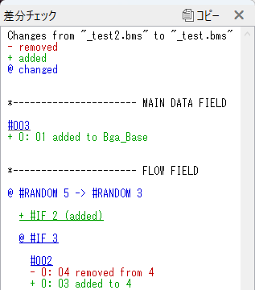

差分チェック
選んだファイルを変更前、編集中のデータを変更後とみなして、内容がどれくらい変更されているのかを確認する機能です。
- 複数の難易度差分を作る際に、時間方向のズレや抜け、意図しないノートの追加が発生していないかを確認できます。
- #RANDOMによる分岐の内容もトップレベルに限り変更を調べます。
- このウィンドウはノンモーダルです。すなわち、このウィンドウを開いた状態で、他の作業を行うことができます。
説明
-
 を押すと、テキストボックスの内容をクリップボードにコピーします。
を押すと、テキストボックスの内容をクリップボードにコピーします。
-
各行の先頭の文字が、その変更の種類を表します。
- -で始まる行は、その内容が変更後では削除されていることを表します。
- +で始まる行は、その内容が変更後で新たに追加されていることを表します。
- @で始まる行は、両方のデータに存在はするが、その内容が変更されていることを表します。
- それ以外の行はコメントです。フィールドの区切りを表します。
-
音声レーンにおけるレーンの違いは無視されます。
- 例えば変更前では#WAV01のノートがBGMレーンに存在し、変更後では同じ時刻/同じ定義番号のノートが演奏レーンに存在する場合、これらは同一であって変更されていないとみなされ、この一覧には表示されません。
- 逆に、各データで同じ時刻/同じレーンにノートが存在する場合でも、それらの定義番号が異なれば、前者の削除と後者の追加がこの一覧で通知されます。
-
その他のレーンに関しては、レーンが異なる場合も変更があったとみなされます。
- 例えば変更前ではBga_Baseのレーンにノートが存在し、変更後では同じ時刻/同じ定義番号のノートがBga_Layerに存在する場合、前者の削除と後者の追加がこの一覧で通知されます。
-
下線付きのリンクはクリックできます。
- 小節番号(#001など)をクリックすると、その小節が画面に収まるようにスクロールします。
- 分岐枝の名前(#IF 1など)をクリックすると、その分岐へ降下します。
- 分岐内の小節番号をクリックすると、その分岐へ降下しつつ、その小節が画面に収まるようにスクロールします。